Prelab
I chose to do a drift stunt. I started out with my angular orientation PID code. At first I tried entering the drive forward command, turning, and then driving forward again as shown below.
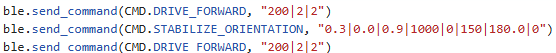
This approach didn't work since my orientation PID code relies on having an initial angle reading from the IMU as shown below.
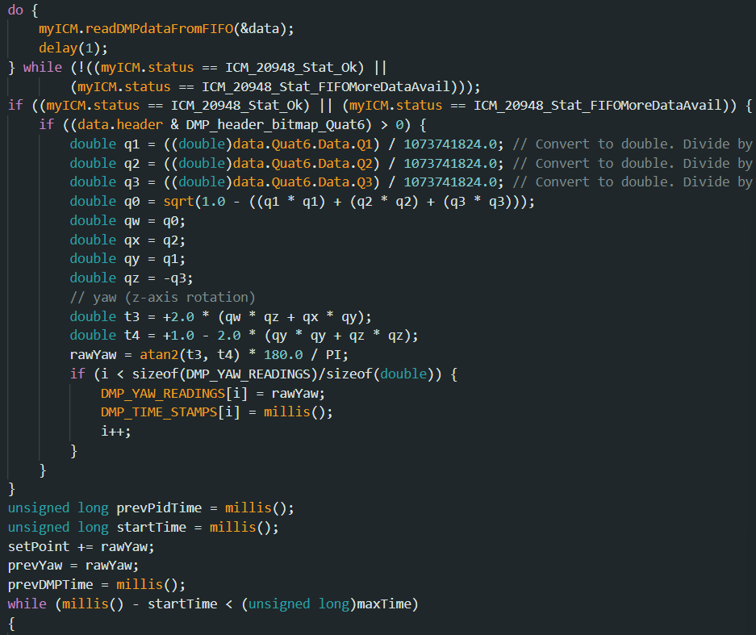
I then looked at my orientation PID code inputs and realized I could set the robot to drive forward instead of stopping when the robot is at the set angle. I also realized I could set the angle mid way through with my setpoint timer input as shown below.
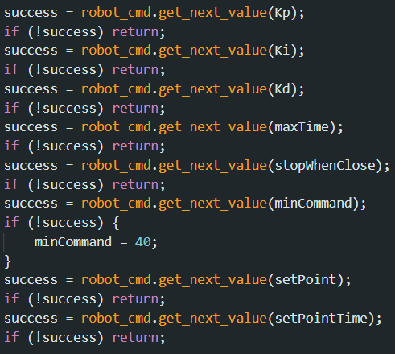
This would get rid of the delay between multiple commands and the delay from reading the initial angle.
Eventually I branched off my existing orientation PID command and made a new one for drifting that would drive forward when the angle was held and also had variable forward steering on both sides of the robot. As you can see below, at the top, I initialize two variables for whether or not the robot's inner turning wheels will drive forward or backwards. When turning, The outer motors drive at maximum speed, while the inner motors can either slow down (while still rotating forwards) or go backwards to get an even tighter turning radius. You can see an image of what I mean by inner and outer wheels when turning below. These two variables allow me to slightly turn the robot while still driving forward, or do a complete 180 on the spot. I break the motorCommand from the PID into two sections depending on how bad the PID wants the robot to turn. If it is 128 or above, the PID wants the robot to make a drastic angle change so I make the inner turning wheels go backwards to tighten the turning radius. If it is below 128, I make the inner wheels still drive forward, but it will always be driving forward slower than the outer turning wheels. If the PID needs the robot to turn right, the motorCommand variable will be negative. If the PID needs the robot to turn left, the motorCommand variable will be positive. This is how it was in my original orientation PID code. The set point system is the same as before too. When the current run time is passed the start time, the robot changes the targetYaw variable to change what angle it wants to maintain. For this stunt, it was 180 degrees, but my code allows me to set the set point angle in the command.
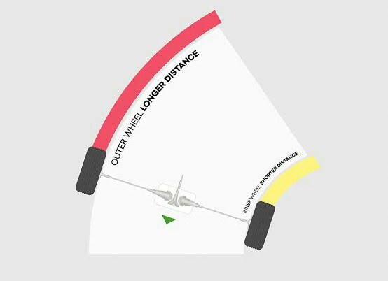
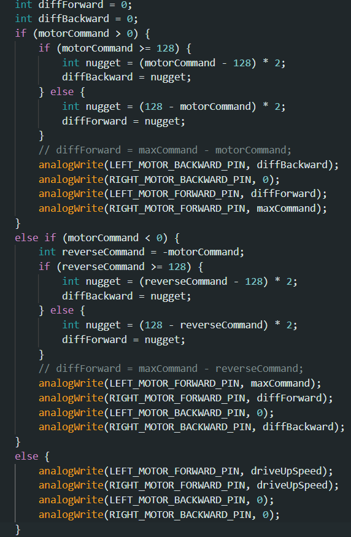

Overall, my code maintains a straight line driving forward, then when the set point time has passed, it changes the target yaw to maintain which in this instance where we need to turn 180 degrees, makes the robot drift around and drive 180 degrees in the opposite direction it was initially going in. The forward momentum of driving forward initially causes a J-turn, and it also causes a burnout too since the robot struggles to gain traction fighting the initial forward momentum when driving back.
Results
I started the robot within 4 meters of the wall and marked the 3 foot line where the robot should start its drift. Below are my results:
Result 1:
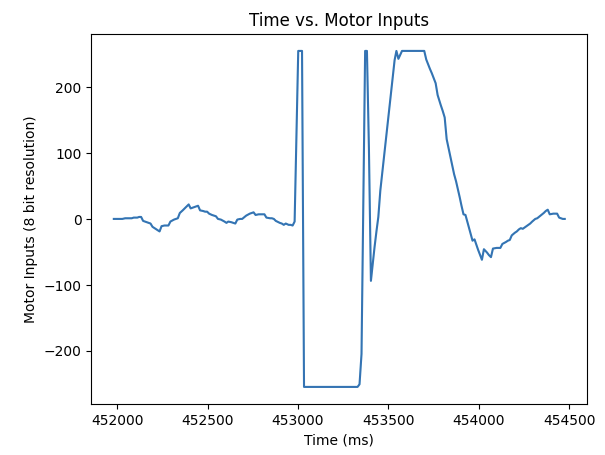
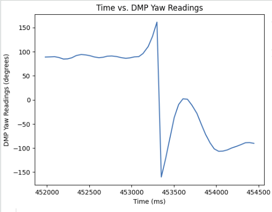
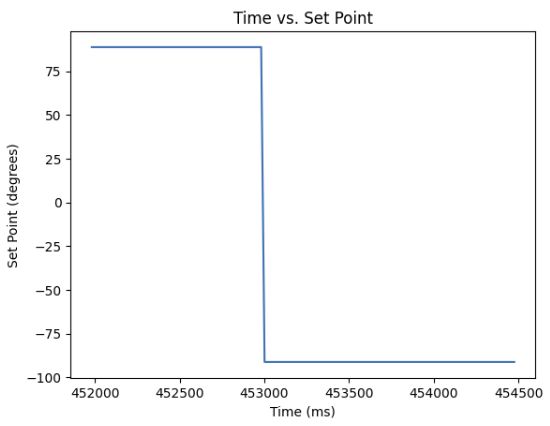
As you can see in the motor data, the robot swings heavy between driving the left and right motors back and forth to whip around the car initially and then counter-steering for the oversteer.
Result 2:
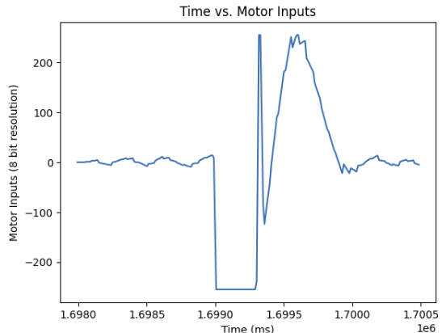
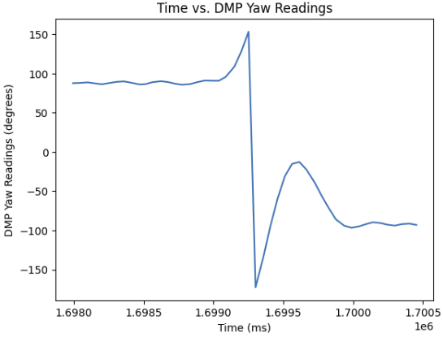
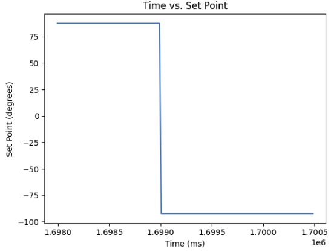
This time the robot wanted to start turning
Result 3:
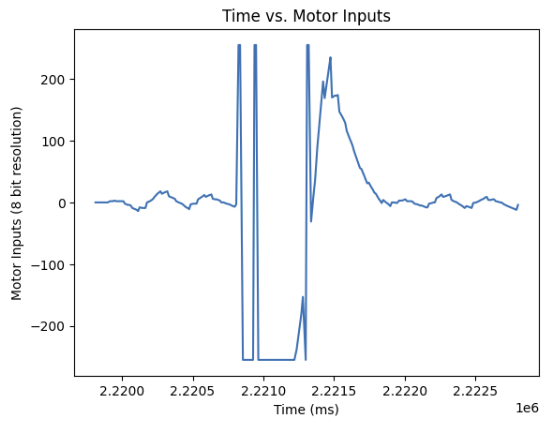
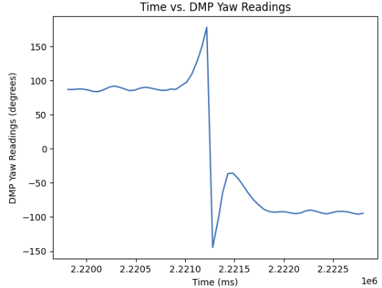
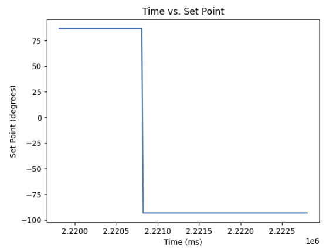
I may have set the robot closer to the wall, but it perfectly barely missed the wall when drifting and kicked the padding out. I also made the robot drive back for a longer time.
For every one of those results, I drove the car forwards (maintaining a 0 degree heading) at 200 PWM, and started the drift after 1 second of driving forward. Then the robot was set to turn around to maintain -180 degrees and driving forwards at 200 PWM. I set Kp|Ki|Kd = 3.0|0.0|0.9 for every run. The Kp being set to 3.0 might've made the robot too twitchy causing the robot to oversteer and whip back and forth as you can see in the yaw and motor readings from the tests, but seeing the robot counter-steer the oversteer was pretty entertaining so I left the Kp, Ki, and Kd alone. Changing Ki didn't rly change much so I didn't bother tuning it. Setting the Kd any higher made the robot not turn fast enough and any lower made the robot too twitchy.